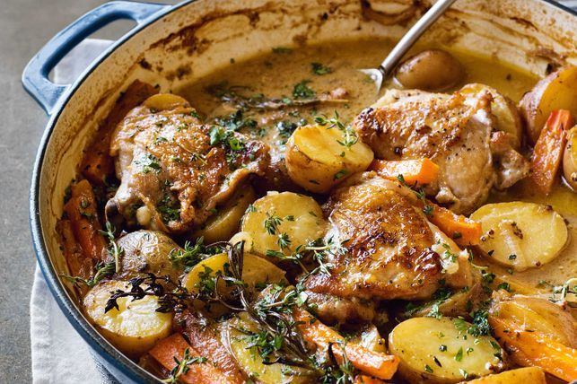

French-style Chicken and Potatoes

Take your tastebuds on a trip to France with this delicious and easy French-style creamy chicken and potato bake.
Ingredients:
- Condensed cream of chicken soup
- 20g unsalted butter
- 20g unsalted butter
- 2 tbsp plain flour
- 2 tbsp milk
- 1/2 cup Massel chicken style liquid stock
- Large pinch of onion powder
- Large pinch of garlic powder
- Large pinch of dried thyme
- Large pinch of salt
- French-style chicken and potatoes
- 2 tsp extra virgin olive oil
- 4 Coles RSPCA Approved Chicken Thigh Cutlets (with skin)
- 2 garlic cloves, crushed
- 1 brown onion, sliced
- 1 cup dry white wine (see note)
- Massel chicken style liquid stock
- 1/4 cup dijon mustard
- 2 tsp white sugar
- 3 carrots, cut into thick batons
- 500g baby red delight potatoes, halved
- 2 sprigs fresh rosemary (see note)
- 2 sprigs fresh thyme, plus extra to serve
- Make condensed chicken soup: Melt butter in a small saucepan over medium heat. Add flour. Stir to create a paste. Cook for 1 minute. Whisk in milk until mixture forms a smooth and thick paste. Gradually whisk in stock, onion powder, garlic powder, thyme and salt until mixture is smooth. Cook, whisking constantly, for 2 to 3 minutes or until mixture thickens. Remove from heat. Set aside to cool 10 minutes.
- Preheat oven to 200C/180C fan-forced.
- Meanwhile, heat oil in a large heavy-based flameproof ovenproof dish over high heat. Add chicken, skin-side down. Cook for 3 minutes or until skin is light golden. Turn. Cook for 2 minutes. Transfer to a plate.
- Carefully drain any excess fat from dish. Return to heat. Add garlic and onion. Cook, stirring, for 2 minutes. Add wine. Simmer, stirring, for 3 minutes. Add Condensed Chicken Soup, ½ cup of water, stock, mustard and sugar. Stir to dissolve mustard. Add carrot, potato, rosemary and thyme. Stir to combine.
- Return chicken to pan. Cover. Transfer to oven. Bake for 30 minutes. Remove lid. Bake for a further 20 minutes or until chicken is dark brown and cooked through. Stand 5 minutes. Serve sprinkled with extra thyme.